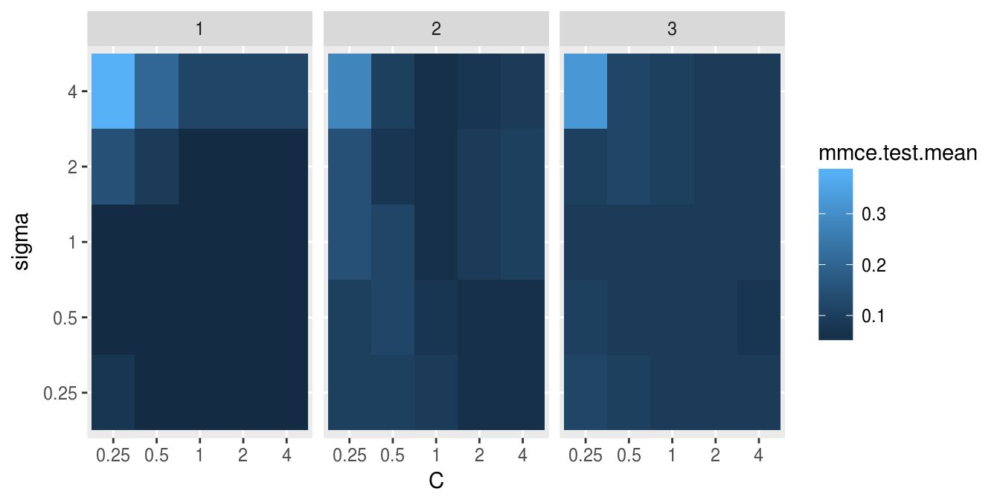

Nested Resampling
In order to obtain honest performance estimates for a learner all parts of the model building like preprocessing and model selection steps should be included in the resampling, i.e., repeated for every pair of training/test data. For steps that themselves require resampling like parameter tuning or feature selection (via the wrapper approach) this results in two nested resampling loops.

Nested Resampling Figure
The graphic above illustrates nested resampling for parameter tuning with 3-fold cross-validation in the outer and 4-fold cross-validation in the inner loop.
In the outer resampling loop, we have three pairs of training/test sets. On each of these outer training sets parameter tuning is done, thereby executing the inner resampling loop. This way, we get one set of selected hyperparameters for each outer training set. Then the learner is fitted on each outer training set using the corresponding selected hyperparameters and its performance is evaluated on the outer test sets.
In [%mlr], you can get nested resampling for free without programming any looping by using the wrapper functionality. This works as follows:
- Generate a wrapped Learner via function [&makeTuneWrapper] or [&makeFeatSelWrapper]. Specify the inner resampling strategy using their
resamplingargument. - Call function [&resample] (see also the section about resampling) and pass the outer resampling strategy to its
resamplingargument.
You can freely combine different inner and outer resampling strategies.
The outer strategy can be a resample description (ResampleDesc) or a resample instance (ResampleInstance). A common setup is prediction and performance evaluation on a fixed outer test set. This can be achieved by using function [&makeFixedHoldoutInstance] to generate the outer ResampleInstance.
The inner resampling strategy should preferably be a ResampleDesc, as the sizes of the outer training sets might differ. Per default, the inner resample description is instantiated once for every outer training set. This way during tuning/feature selection all parameter or feature sets are compared on the same inner training/test sets to reduce variance. You can also turn this off using the same.resampling.instance argument of makeTuneControl* or makeFeatSelControl*.
Nested resampling is computationally expensive. For this reason in the examples shown below we use relatively small search spaces and a low number of resampling iterations. In practice, you normally have to increase both. As this is computationally intensive you might want to have a look at section parallelization.
Tuning
As you might recall from the tutorial page about tuning, you need to define a search space by function makeParamSet, a search strategy by makeTuneControl*, and a method to evaluate hyperparameter settings (i.e., the inner resampling strategy and a performance measure).
Below is a classification example. We evaluate the performance of a support vector machine (ksvm) with tuned cost parameter C and RBF kernel parameter sigma. We use 3-fold cross-validation in the outer and subsampling with 2 iterations in the inner loop. For tuning a grid search is used to find the hyperparameters with lowest error rate (mmce is the default measure for classification). The wrapped Learner is generated by calling [&makeTuneWrapper].
Note that in practice the parameter set should be larger. A common recommendation is 2^(-12:12) for both C and sigma.
## Tuning in inner resampling loop
ps = makeParamSet(
makeDiscreteParam("C", values = 2^(-2:2)),
makeDiscreteParam("sigma", values = 2^(-2:2))
)
ctrl = makeTuneControlGrid()
inner = makeResampleDesc("Subsample", iters = 2)
lrn = makeTuneWrapper("classif.ksvm", resampling = inner, par.set = ps, control = ctrl, show.info = FALSE)
## Outer resampling loop
outer = makeResampleDesc("CV", iters = 3)
r = resample(lrn, iris.task, resampling = outer, extract = getTuneResult, show.info = FALSE)
r## Resample Result
## Task: iris-example
## Learner: classif.ksvm.tuned
## Aggr perf: mmce.test.mean=0.0400000
## Runtime: 4.49106You can obtain the error rates on the 3 outer test sets by:
r$measures.test## iter mmce
## 1 1 0.08
## 2 2 0.02
## 3 3 0.02Accessing the tuning result
We have kept the results of the tuning for further evaluations. For example one might want to find out, if the best obtained configurations vary for the different outer splits. As storing entire models may be expensive (but possible by setting models = TRUE) we used the extract option of [&resample]. Function [&getTuneResult] returns, among other things, the optimal hyperparameter values and the optimization path for each iteration of the outer resampling loop. Note that the performance values shown when printing r$extract are the aggregated performances resulting from inner resampling on the outer training set for the best hyperparameter configurations (not to be confused with r$measures.test shown above).
r$extract## [[1]]
## Tune result:
## Op. pars: C=4; sigma=1
## mmce.test.mean=0.0441176
##
## [[2]]
## Tune result:
## Op. pars: C=4; sigma=0.5
## mmce.test.mean=0.0588235
##
## [[3]]
## Tune result:
## Op. pars: C=4; sigma=0.5
## mmce.test.mean=0.0735294names(r$extract[[1]])## [1] "learner" "control" "x" "y" "threshold" "opt.path"We can compare the optimal parameter settings obtained in the 3 resampling iterations. As you can see, the optimal configuration usually depends on the data. You may be able to identify a range of parameter settings that achieve good performance though, e.g., the values for C should be at least 1 and the values for sigma should be between 0 and 1.
With function [&getNestedTuneResultsOptPathDf] you can extract the optimization paths for the 3 outer cross-validation iterations for further inspection and analysis. These are stacked in one data.frame with column iter indicating the resampling iteration.
opt.paths = getNestedTuneResultsOptPathDf(r)
head(opt.paths, 10)## C sigma mmce.test.mean dob eol error.message exec.time iter
## 1 0.25 0.25 0.07352941 1 NA <NA> 1.320 1
## 2 0.5 0.25 0.04411765 2 NA <NA> 0.031 1
## 3 1 0.25 0.04411765 3 NA <NA> 0.032 1
## 4 2 0.25 0.04411765 4 NA <NA> 0.036 1
## 5 4 0.25 0.04411765 5 NA <NA> 0.031 1
## 6 0.25 0.5 0.04411765 6 NA <NA> 0.031 1
## 7 0.5 0.5 0.04411765 7 NA <NA> 0.035 1
## 8 1 0.5 0.04411765 8 NA <NA> 0.032 1
## 9 2 0.5 0.04411765 9 NA <NA> 0.032 1
## 10 4 0.5 0.04411765 10 NA <NA> 0.035 1Below we visualize the opt.paths for the 3 outer resampling iterations.
g = ggplot(opt.paths, aes(x = C, y = sigma, fill = mmce.test.mean))
g + geom_tile() + facet_wrap(~ iter)
Another useful function is [&getNestedTuneResultsX], which extracts the best found hyperparameter settings for each outer resampling iteration.
## C sigma
## 1 4 1.0
## 2 4 0.5
## 3 4 0.5Feature selection
As you might recall from the section about feature selection, [%mlr] supports the filter and the wrapper approach.
Wrapper methods
Wrapper methods use the performance of a learning algorithm to assess the usefulness of a feature set. In order to select a feature subset a learner is trained repeatedly on different feature subsets and the subset which leads to the best learner performance is chosen.
For feature selection in the inner resampling loop, you need to choose a search strategy (function makeFeatSelControl*), a performance measure and the inner resampling strategy. Then use function [&makeFeatSelWrapper] to bind everything together.
Below we use sequential forward selection with linear regression on the BostonHousing data set ([&bh.task]).
## Feature selection in inner resampling loop
inner = makeResampleDesc("CV", iters = 3)
lrn = makeFeatSelWrapper("regr.lm", resampling = inner,
control = makeFeatSelControlSequential(method = "sfs"), show.info = FALSE)
## Outer resampling loop
outer = makeResampleDesc("Subsample", iters = 2)
r = resample(learner = lrn, task = bh.task, resampling = outer, extract = getFeatSelResult,
show.info = FALSE)
r## Resample Result
## Task: BostonHousing-example
## Learner: regr.lm.featsel
## Aggr perf: mse.test.mean=25.0531735
## Runtime: 6.22762r$measures.test## iter mse
## 1 1 25.58843
## 2 2 24.51792Accessing the selected features
The result of the feature selection can be extracted by function [&getFeatSelResult]. It is also possible to keep whole models by setting models = TRUE when calling [&resample].
r$extract## [[1]]
## FeatSel result:
## Features (12): crim, zn, indus, chas, nox, rm, dis, rad, tax, ptratio, b, lstat
## mse.test.mean=23.4100497
##
## [[2]]
## FeatSel result:
## Features (8): crim, zn, chas, nox, rm, dis, ptratio, lstat
## mse.test.mean=25.8456125## Selected features in the first outer resampling iteration
r$extract[[1]]$x## [1] "crim" "zn" "indus" "chas" "nox" "rm" "dis"
## [8] "rad" "tax" "ptratio" "b" "lstat"## Resampled performance of the selected feature subset on the first inner training set
r$extract[[1]]$y## mse.test.mean
## 23.41005As for tuning, you can extract the optimization paths. The resulting data.frames contain, among others, binary columns for all features, indicating if they were included in the linear regression model, and the corresponding performances.
opt.paths = lapply(r$extract, function(x) as.data.frame(x$opt.path))
head(opt.paths[[1]])## crim zn indus chas nox rm age dis rad tax ptratio b lstat mse.test.mean
## 1 0 0 0 0 0 0 0 0 0 0 0 0 0 85.61936
## 2 1 0 0 0 0 0 0 0 0 0 0 0 0 72.75990
## 3 0 1 0 0 0 0 0 0 0 0 0 0 0 73.98616
## 4 0 0 1 0 0 0 0 0 0 0 0 0 0 63.92164
## 5 0 0 0 1 0 0 0 0 0 0 0 0 0 84.62133
## 6 0 0 0 0 1 0 0 0 0 0 0 0 0 71.73817
## dob eol error.message exec.time
## 1 1 2 <NA> 0.015
## 2 2 2 <NA> 0.028
## 3 2 2 <NA> 0.026
## 4 2 2 <NA> 0.027
## 5 2 2 <NA> 0.030
## 6 2 2 <NA> 0.030An easy-to-read version of the optimization path for sequential feature selection can be obtained with function [&analyzeFeatSelResult].
analyzeFeatSelResult(r$extract[[1]])## Features : 12
## Performance : mse.test.mean=23.4100497
## crim, zn, indus, chas, nox, rm, dis, rad, tax, ptratio, b, lstat
##
## Path to optimum:
## - Features: 0 Init : Perf = 85.619 Diff: NA *
## - Features: 1 Add : rm Perf = 39.115 Diff: 46.504 *
## - Features: 2 Add : lstat Perf = 30.767 Diff: 8.3488 *
## - Features: 3 Add : ptratio Perf = 27.813 Diff: 2.9536 *
## - Features: 4 Add : chas Perf = 26.555 Diff: 1.2577 *
## - Features: 5 Add : dis Perf = 25.655 Diff: 0.90017 *
## - Features: 6 Add : nox Perf = 24.747 Diff: 0.90802 *
## - Features: 7 Add : rad Perf = 24.372 Diff: 0.37461 *
## - Features: 8 Add : indus Perf = 24.145 Diff: 0.22761 *
## - Features: 9 Add : crim Perf = 24.001 Diff: 0.1439 *
## - Features: 10 Add : zn Perf = 23.864 Diff: 0.13716 *
## - Features: 11 Add : tax Perf = 23.464 Diff: 0.39942 *
## - Features: 12 Add : b Perf = 23.41 Diff: 0.054203 *
##
## Stopped, because no improving feature was found.Filter methods with tuning
Filter methods assign an importance value to each feature. Based on these values you can select a feature subset by either keeping all features with importance higher than a certain threshold or by keeping a fixed number or percentage of the highest ranking features. Often, neither the theshold nor the number or percentage of features is known in advance and thus tuning is necessary.
In the example below the threshold value (fw.threshold) is tuned in the inner resampling loop. For this purpose the base Learner "regr.lm" is wrapped two times. First, [&makeFilterWrapper] is used to fuse linear regression with a feature filtering preprocessing step. Then a tuning step is added by [&makeTuneWrapper].
## Tuning of the percentage of selected filters in the inner loop
lrn = makeFilterWrapper(learner = "regr.lm", fw.method = "chi.squared")
ps = makeParamSet(makeDiscreteParam("fw.threshold", values = seq(0, 1, 0.2)))
ctrl = makeTuneControlGrid()
inner = makeResampleDesc("CV", iters = 3)
lrn = makeTuneWrapper(lrn, resampling = inner, par.set = ps, control = ctrl, show.info = FALSE)
## Outer resampling loop
outer = makeResampleDesc("CV", iters = 3)
r = resample(learner = lrn, task = bh.task, resampling = outer, models = TRUE, show.info = FALSE)
r## Resample Result
## Task: BostonHousing-example
## Learner: regr.lm.filtered.tuned
## Aggr perf: mse.test.mean=23.1636769
## Runtime: 5.57459Accessing the selected features and optimal percentage
In the above example we kept the complete models.
Below are some examples that show how to extract information from the models.
r$models## [[1]]
## Model for learner.id=regr.lm.filtered.tuned; learner.class=TuneWrapper
## Trained on: task.id = BostonHousing-example; obs = 337; features = 13
## Hyperparameters: fw.method=chi.squared
##
## [[2]]
## Model for learner.id=regr.lm.filtered.tuned; learner.class=TuneWrapper
## Trained on: task.id = BostonHousing-example; obs = 338; features = 13
## Hyperparameters: fw.method=chi.squared
##
## [[3]]
## Model for learner.id=regr.lm.filtered.tuned; learner.class=TuneWrapper
## Trained on: task.id = BostonHousing-example; obs = 337; features = 13
## Hyperparameters: fw.method=chi.squaredThe result of the feature selection can be extracted by function [&getFilteredFeatures]. Almost always all 13 features are selected.
lapply(r$models, function(x) getFilteredFeatures(x$learner.model$next.model))## [[1]]
## [1] "crim" "zn" "indus" "chas" "nox" "rm" "age"
## [8] "dis" "rad" "tax" "ptratio" "b" "lstat"
##
## [[2]]
## [1] "crim" "zn" "indus" "nox" "rm" "age" "dis"
## [8] "rad" "tax" "ptratio" "b" "lstat"
##
## [[3]]
## [1] "crim" "zn" "indus" "chas" "nox" "rm" "age"
## [8] "dis" "rad" "tax" "ptratio" "b" "lstat"Below the tune results and optimization paths are accessed.
res = lapply(r$models, getTuneResult)
res## [[1]]
## Tune result:
## Op. pars: fw.threshold=0
## mse.test.mean=23.9715175
##
## [[2]]
## Tune result:
## Op. pars: fw.threshold=0.2
## mse.test.mean=26.6770276
##
## [[3]]
## Tune result:
## Op. pars: fw.threshold=0
## mse.test.mean=24.0893056opt.paths = lapply(res, function(x) as.data.frame(x$opt.path))
opt.paths[[1]]## fw.threshold mse.test.mean dob eol error.message exec.time
## 1 0 23.97152 1 NA <NA> 0.628
## 2 0.2 24.71369 2 NA <NA> 0.283
## 3 0.4 24.36122 3 NA <NA> 0.335
## 4 0.6 28.69371 4 NA <NA> 0.186
## 5 0.8 72.78846 5 NA <NA> 0.175
## 6 1 87.08727 6 NA <NA> 0.207Benchmark experiments
In a benchmark experiment multiple learners are compared on one or several tasks (see also the section about benchmarking). Nested resampling in benchmark experiments is achieved the same way as in resampling:
- First, use [&makeTuneWrapper] or [&makeFeatSelWrapper] to generate wrapped Learners with the inner resampling strategies of your choice.
- Second, call [&benchmark] and specify the outer resampling strategies for all tasks.
The inner resampling strategies should be resample descriptions. You can use different inner resampling strategies for different wrapped learners. For example it might be practical to do fewer subsampling or bootstrap iterations for slower learners.
If you have larger benchmark experiments you might want to have a look at the section about parallelization.
As mentioned in the section about benchmark experiments you can also use different resampling strategies for different learning tasks by passing a list of resampling descriptions or instances to [&benchmark].
We will see three examples to show different benchmark settings:
- Two data sets + two classification algorithms + tuning
- One data set + two regression algorithms + feature selection
- One data set + two regression algorithms + feature filtering + tuning
Example 1: Two tasks, two learners, tuning
Below is a benchmark experiment with two data sets, iris and sonar, and two Learners, ksvm and kknn, that are both tuned.
As inner resampling strategies we use holdout for ksvm and subsampling with 3 iterations for kknn. As outer resampling strategies we take holdout for the iris and bootstrap with 2 iterations for the sonar data ([&sonar.task]). We consider the accuracy (acc), which is used as tuning criterion, and also calculate the balanced error rate (ber).
## List of learning tasks
tasks = list(iris.task, sonar.task)
## Tune svm in the inner resampling loop
ps = makeParamSet(
makeDiscreteParam("C", 2^(-1:1)),
makeDiscreteParam("sigma", 2^(-1:1)))
ctrl = makeTuneControlGrid()
inner = makeResampleDesc("Holdout")
lrn1 = makeTuneWrapper("classif.ksvm", resampling = inner, par.set = ps, control = ctrl,
show.info = FALSE)
## Tune k-nearest neighbor in inner resampling loop
ps = makeParamSet(makeDiscreteParam("k", 3:5))
ctrl = makeTuneControlGrid()
inner = makeResampleDesc("Subsample", iters = 3)
lrn2 = makeTuneWrapper("classif.kknn", resampling = inner, par.set = ps, control = ctrl,
show.info = FALSE)## Loading required package: kknn## Learners
lrns = list(lrn1, lrn2)
## Outer resampling loop
outer = list(makeResampleDesc("Holdout"), makeResampleDesc("Bootstrap", iters = 2))
res = benchmark(lrns, tasks, outer, measures = list(acc, ber), show.info = FALSE)
res## task.id learner.id acc.test.mean ber.test.mean
## 1 iris-example classif.ksvm.tuned 0.9400000 0.06277056
## 2 iris-example classif.kknn.tuned 0.9200000 0.09523810
## 3 Sonar-example classif.ksvm.tuned 0.5032457 0.50000000
## 4 Sonar-example classif.kknn.tuned 0.8344693 0.16594130The print method for the [&BenchmarkResult] shows the aggregated performances from the outer resampling loop.
As you might recall, [%mlr] offers several accessor function to extract information from the benchmark result. These are listed on the help page of [&BenchmarkResult] and many examples are shown on the tutorial page about benchmark experiments.
The performance values in individual outer resampling runs can be obtained by [&getBMRPerformances]. Note that, since we used different outer resampling strategies for the two tasks, the number of rows per task differ.
getBMRPerformances(res, as.df = TRUE)## task.id learner.id iter acc ber
## 1 iris-example classif.ksvm.tuned 1 0.9400000 0.06277056
## 2 iris-example classif.kknn.tuned 1 0.9200000 0.09523810
## 3 Sonar-example classif.ksvm.tuned 1 0.4936709 0.50000000
## 4 Sonar-example classif.ksvm.tuned 2 0.5128205 0.50000000
## 5 Sonar-example classif.kknn.tuned 1 0.8227848 0.17596154
## 6 Sonar-example classif.kknn.tuned 2 0.8461538 0.15592105The results from the parameter tuning can be obtained through function [&getBMRTuneResults].
getBMRTuneResults(res)## $`iris-example`
## $`iris-example`$classif.ksvm.tuned
## $`iris-example`$classif.ksvm.tuned[[1]]
## Tune result:
## Op. pars: C=1; sigma=0.5
## mmce.test.mean=0.0588235
##
##
## $`iris-example`$classif.kknn.tuned
## $`iris-example`$classif.kknn.tuned[[1]]
## Tune result:
## Op. pars: k=3
## mmce.test.mean=0.0686275
##
##
##
## $`Sonar-example`
## $`Sonar-example`$classif.ksvm.tuned
## $`Sonar-example`$classif.ksvm.tuned[[1]]
## Tune result:
## Op. pars: C=2; sigma=1
## mmce.test.mean=0.2285714
##
## $`Sonar-example`$classif.ksvm.tuned[[2]]
## Tune result:
## Op. pars: C=2; sigma=0.5
## mmce.test.mean=0.1857143
##
##
## $`Sonar-example`$classif.kknn.tuned
## $`Sonar-example`$classif.kknn.tuned[[1]]
## Tune result:
## Op. pars: k=5
## mmce.test.mean=0.0809524
##
## $`Sonar-example`$classif.kknn.tuned[[2]]
## Tune result:
## Op. pars: k=3
## mmce.test.mean=0.0380952As for several other accessor functions a clearer representation as data.frame can be achieved by setting as.df = TRUE.
getBMRTuneResults(res, as.df = TRUE)## task.id learner.id iter C sigma mmce.test.mean k
## 1 iris-example classif.ksvm.tuned 1 1 0.5 0.05882353 NA
## 2 iris-example classif.kknn.tuned 1 NA NA 0.06862745 3
## 3 Sonar-example classif.ksvm.tuned 1 2 1.0 0.22857143 NA
## 4 Sonar-example classif.ksvm.tuned 2 2 0.5 0.18571429 NA
## 5 Sonar-example classif.kknn.tuned 1 NA NA 0.08095238 5
## 6 Sonar-example classif.kknn.tuned 2 NA NA 0.03809524 3It is also possible to extract the tuning results for individual tasks and learners and, as shown in earlier examples, inspect the optimization path.
tune.res = getBMRTuneResults(res, task.ids = "Sonar-example", learner.ids = "classif.ksvm.tuned",
as.df = TRUE)
tune.res## task.id learner.id iter C sigma mmce.test.mean
## 1 Sonar-example classif.ksvm.tuned 1 2 1.0 0.2285714
## 2 Sonar-example classif.ksvm.tuned 2 2 0.5 0.1857143getNestedTuneResultsOptPathDf(res$results[["Sonar-example"]][["classif.ksvm.tuned"]])Example 2: One task, two learners, feature selection
Let’s see how we can do feature selection in a benchmark experiment:
## Feature selection in inner resampling loop
ctrl = makeFeatSelControlSequential(method = "sfs")
inner = makeResampleDesc("Subsample", iters = 2)
lrn = makeFeatSelWrapper("regr.lm", resampling = inner, control = ctrl, show.info = FALSE)
## Learners
lrns = list("regr.rpart", lrn)
## Outer resampling loop
outer = makeResampleDesc("Subsample", iters = 2)
res = benchmark(tasks = bh.task, learners = lrns, resampling = outer, show.info = FALSE)
res## task.id learner.id mse.test.mean
## 1 BostonHousing-example regr.rpart 23.58395
## 2 BostonHousing-example regr.lm.featsel 32.78100The selected features can be extracted by function [&getBMRFeatSelResults]. By default, a nested list, with the first level indicating the task and the second level indicating the learner, is returned. If only a single learner or, as in our case, a single task is considered, setting drop = TRUE simplifies the result to a flat list.
getBMRFeatSelResults(res)## $`BostonHousing-example`
## $`BostonHousing-example`$regr.rpart
## NULL
##
## $`BostonHousing-example`$regr.lm.featsel
## $`BostonHousing-example`$regr.lm.featsel[[1]]
## FeatSel result:
## Features (7): crim, indus, rm, age, dis, ptratio, b
## mse.test.mean=18.1091296
##
## $`BostonHousing-example`$regr.lm.featsel[[2]]
## FeatSel result:
## Features (9): indus, chas, rm, age, dis, tax, ptratio, b, lstat
## mse.test.mean=16.8746713getBMRFeatSelResults(res, drop = TRUE)## $regr.rpart
## NULL
##
## $regr.lm.featsel
## $regr.lm.featsel[[1]]
## FeatSel result:
## Features (7): crim, indus, rm, age, dis, ptratio, b
## mse.test.mean=18.1091296
##
## $regr.lm.featsel[[2]]
## FeatSel result:
## Features (9): indus, chas, rm, age, dis, tax, ptratio, b, lstat
## mse.test.mean=16.8746713You can access results for individual learners and tasks and inspect them further.
feats = getBMRFeatSelResults(res, learner.id = "regr.lm.featsel", drop = TRUE)
## Selected features in the first outer resampling iteration
feats[[1]]$x## [1] "crim" "indus" "rm" "age" "dis" "ptratio" "b"## Resampled performance of the selected feature subset on the first inner training set
feats[[1]]$y## mse.test.mean
## 18.10913As for tuning, you can extract the optimization paths. The resulting data.frames contain, among others, binary columns for all features, indicating if they were included in the linear regression model, and the corresponding performances. [&analyzeFeatSelResult] gives a clearer overview.
opt.paths = lapply(feats, function(x) as.data.frame(x$opt.path))
head(opt.paths[[1]])## crim zn indus chas nox rm age dis rad tax ptratio b lstat mse.test.mean
## 1 0 0 0 0 0 0 0 0 0 0 0 0 0 81.87547
## 2 1 0 0 0 0 0 0 0 0 0 0 0 0 67.88940
## 3 0 1 0 0 0 0 0 0 0 0 0 0 0 70.72897
## 4 0 0 1 0 0 0 0 0 0 0 0 0 0 62.40231
## 5 0 0 0 1 0 0 0 0 0 0 0 0 0 80.88796
## 6 0 0 0 0 1 0 0 0 0 0 0 0 0 66.93496
## dob eol error.message exec.time
## 1 1 2 <NA> 0.011
## 2 2 2 <NA> 0.020
## 3 2 2 <NA> 0.022
## 4 2 2 <NA> 0.021
## 5 2 2 <NA> 0.027
## 6 2 2 <NA> 0.018analyzeFeatSelResult(feats[[1]])## Features : 7
## Performance : mse.test.mean=18.1091296
## crim, indus, rm, age, dis, ptratio, b
##
## Path to optimum:
## - Features: 0 Init : Perf = 81.875 Diff: NA *
## - Features: 1 Add : rm Perf = 29.868 Diff: 52.008 *
## - Features: 2 Add : ptratio Perf = 24.62 Diff: 5.2473 *
## - Features: 3 Add : b Perf = 20.642 Diff: 3.9786 *
## - Features: 4 Add : age Perf = 19.594 Diff: 1.0479 *
## - Features: 5 Add : dis Perf = 18.657 Diff: 0.93728 *
## - Features: 6 Add : crim Perf = 18.198 Diff: 0.45874 *
## - Features: 7 Add : indus Perf = 18.109 Diff: 0.088751 *
##
## Stopped, because no improving feature was found.Example 3: One task, two learners, feature filtering with tuning
Here is a minimal example for feature filtering with tuning of the feature subset size.
## Feature filtering with tuning in the inner resampling loop
lrn = makeFilterWrapper(learner = "regr.lm", fw.method = "chi.squared")
ps = makeParamSet(makeDiscreteParam("fw.abs", values = seq_len(getTaskNFeats(bh.task))))
ctrl = makeTuneControlGrid()
inner = makeResampleDesc("CV", iter = 2)
lrn = makeTuneWrapper(lrn, resampling = inner, par.set = ps, control = ctrl,
show.info = FALSE)
## Learners
lrns = list("regr.rpart", lrn)
## Outer resampling loop
outer = makeResampleDesc("Subsample", iter = 3)
res = benchmark(tasks = bh.task, learners = lrns, resampling = outer, show.info = FALSE)
res## task.id learner.id mse.test.mean
## 1 BostonHousing-example regr.rpart 20.96989
## 2 BostonHousing-example regr.lm.filtered.tuned 25.28218## Performances on individual outer test data sets
getBMRPerformances(res, as.df = TRUE)## task.id learner.id iter mse
## 1 BostonHousing-example regr.rpart 1 18.70359
## 2 BostonHousing-example regr.rpart 2 15.75060
## 3 BostonHousing-example regr.rpart 3 28.45548
## 4 BostonHousing-example regr.lm.filtered.tuned 1 26.47730
## 5 BostonHousing-example regr.lm.filtered.tuned 2 18.60252
## 6 BostonHousing-example regr.lm.filtered.tuned 3 30.76672